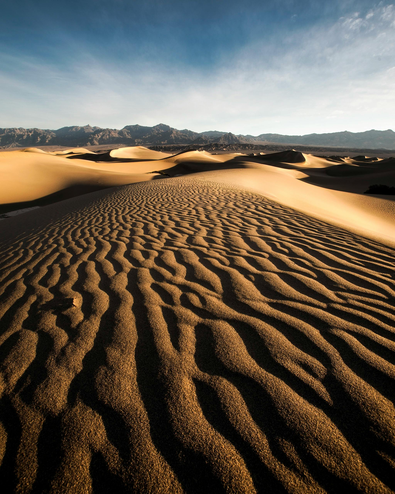
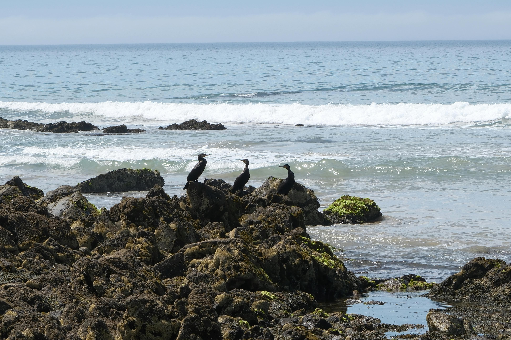

Lakes
By Mussarat on July2,2023

A lake (from Latin: lacus) is a large body of water (larger and deeper than a pond) within a body of land. Most lakes on the surface of the Earth are fresh water and most are in the Northern Hemisphere. More than 60% of the lakes of the world are in Canada. Finland is known as The Land of the Thousand Lakes (there are 187,888 lakes in Finland, of which 60,000 are large).[1] Many lakes are man-made reservoirs built to produce electricity, for recreation, or to use the water for irrigation or industry, or in houses.
Mountains
By Mussarat on Dec 7,2023

Mountains are majestic landforms that rise prominently above their surroundings, formed through geological processes like tectonic activity and erosion. They often feature diverse ecosystems, ranging from lush valleys to rocky peaks, and can influence local climate patterns.
Deserts
By Mussarat on June5,2024
A desert is a region of land that is very dry because it receives low amounts of precipitation (usually in the form of rain, but it may be snow, mist or fog), often has little coverage by plants, and in which streams dry up unless they are supplied by water from outside the area.Deserts generally receive less than 250 mm (10 in) of precipitation each year.The potential evapotranspiration may be large but (in the absence of available water) the actual evapotranspiration may be close to zero.Semi-deserts are regions which receive between 250 and 500 mm (10 and 20 in) and when clad in grass, these are known as steppes.Most deserts on Earth such as the Sahara Desert, Grand Australian Desert and the Great Basin Desert, occur in low altitudes.
Sea
By Mussarat on Aug 2,2024
A sea is a large body of salt water. There are particular seas and the sea. The sea commonly refers to the Ocean, the interconnected body of seawaters that spans most of Earth.The salinity of water bodies varies widely, being lower near the surface and the mouths of large rivers and higher in the depths of the ocean; however, the relative proportions of dissolved salts vary little across the oceans. The most abundant solid dissolved in seawater is sodium chloride. The water also contains salts of magnesium, calcium, potassium, and mercury, amongst many other elements, some in minute concentrations. A wide variety of organisms, including bacteria, protists, algae, plants, fungi, and animals live in the seas, which offers a wide range of marine habitats and ecosystems.
Forest
By Mussarat on Nov 10,2024

A forest is an ecosystem characterized by a dense community of trees.Hundreds of definitions of forest are used throughout the world, incorporating factors such as tree density, tree height, land use, legal standing, and ecological function. The United Nations' Food and Agriculture Organization (FAO) defines a forest as, "Land spanning more than 0.5 hectares with trees higher than 5 meters and a canopy cover of more than 10 percent, or trees able to reach these thresholds in situ. It does not include land that is predominantly under agricultural or urban use.Global Forest Resources Assessment 2020 found that forests covered 4.06 billion hectares (10.0 billion acres; 40.6 million square kilometres; 15.7 million square miles), or approximately 31 percent of the world's land area in 2020.